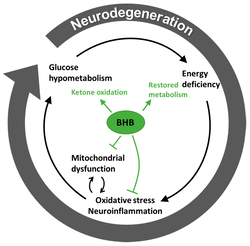
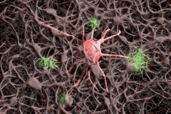
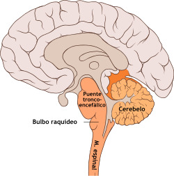
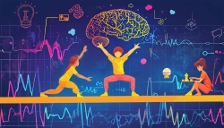
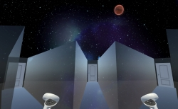

Universidad de Guadalajara, Centro Universitario de Ciencias de la Salud Departamento de Neurociencias Dr. David Fernández Quezada
Neurociencias al alcance de un click
Neurociencias al alcance de un click es un espacio de divulgación científica diseñado para acercar el conocimiento del cerebro y la conducta a cualquier persona interesada en comprender cómo funciona la mente humana. Aquí encontrarás contenidos claros, confiables y basados en evidencia. Este sitio reúne explicaciones accesibles sobre temas clave de neurobiología, psicología, salud mental y comportamiento, con el objetivo de traducir la ciencia en herramientas útiles para la vida cotidiana. Aquí podrás explorar artículos, recursos educativos, infografías y materiales diseñados tanto para estudiantes como para público general, siempre con un enfoque socialmente responsable y orientado al bienestar. Porque la ciencia debe ser para todos, este espacio pone las neurociencias al alcance de un click.
En este espacio se comparten publicaciones recientes y relevantes de diversos investigadores alrededor del mundo. El propósito es acercar al lector a descubrimientos actuales y perspectivas novedosas en el campo de las neurociencias, fomentando la curiosidad científica y el aprendizaje continuo.
· Neurociencias y Salud Cerebral
Cetonas: un combustible alterno que podría proteger al cerebro
Las enfermedades neurodegenerativas, como el Alzheimer o el Parkinson, dañan la capacidad del cerebro para usar glucosa, su fuente principal de energía. El artículo Effects of Ketone Bodies on Brain Metabolism and Function in Neurodegenerative Diseases destaca que los cuerpos cetónicos —moléculas producidas durante el ayuno o dietas bajas en carbohidratos— pueden funcionar como un “combustible de emergencia” para el cerebro.
Referencia

· Estrés y empatía
Cuando haber sufrido nos cambia: cómo el cerebro ajusta la empatía tras vivir un evento negativo
Este estudio en ratones muestra que nuestra propia experiencia de un evento estresante puede cambiar la forma en que respondemos al sufrimiento de otros.
Tras vivir la misma situación negativa, algunos animales se acercan a sus congéneres estresados, mientras que otros los evitan.
Los autores demostraron que un grupo específico de neuronas en la corteza prefrontal medial, que utiliza el neuropéptido CRF, es clave para este cambio de respuesta.
Al modular estas neuronas, se modifican las conductas sociales frente a individuos que atraviesan estrés, lo que ayuda a explicar por qué la historia personal influye en nuestra capacidad de empatizar.
Referencia
· Neurodegeneración
Alzheimer más allá de las neuronas: los oligodendrocitos también aportan a las placas
Tradicionalmente se ha considerado que las neuronas son la principal fuente de beta-amiloide, la proteína que forma las placas características de la enfermedad de Alzheimer.
En este trabajo, los investigadores demostraron que los oligodendrocitos —las células encargadas de producir la mielina— también generan cantidades relevantes de beta-amiloide y contribuyen a la formación de placas en modelos murinos.
Mediante estrategias genéticas específicas por tipo celular, mostraron que reducir ciertas enzimas en oligodendrocitos disminuye la carga de placas en regiones clave del cerebro.
Estos resultados amplían la visión de la enfermedad y abren nuevas posibilidades terapéuticas que consideran a la glía como objetivo.
Referencia

· Teoría del cerebro
Una teoría sensoriomotora del neocórtex: el cerebro como sistema de predicción activa
Este artículo de perspectiva propone que la corteza cerebral funciona como un sistema de código predictivo activo.
Según el autor, cada área cortical no solo procesa información sensorial, sino que también genera “acciones internas” para predecir qué ocurrirá a continuación.
Esta arquitectura podría explicar cómo reconocemos objetos, por qué la percepción se mantiene estable a pesar de los movimientos oculares, cómo aprendemos relaciones parte–todo y de qué manera planificamos acciones complejas a partir de otras más simples.
El trabajo integra hallazgos de neurociencia, teoría de la información y aprendizaje automático, ofreciendo un marco unificado para entender cómo la corteza construye modelos del mundo.
Referencia

· adicciones
El DMT lleva al cerebro al límite: adiós al equilibrio, adiós al “yo”
Un estudio reciente que utilizó DMT como herramienta científica mostró cómo los psicodélicos modifican las ondas alfa del cerebro y debilitan nuestra sensación de “yo”.
Los investigadores descubrieron que el DMT aleja al cerebro de su equilibrio habitual entre el orden y el caos —un estado considerado fundamental para mantener una sensación de identidad estable y coherente a lo largo del tiempo.Referencia
· Conducta
Acontecimientos inesperados y comportamiento prosocial: el efecto Batman
Un nuevo estudio conductual muestra que los eventos súbitos e inesperados pueden aumentar de manera notable las conductas altruistas en contextos cotidianos. Cuando una persona disfrazada de Batman apareció en el metro de Milán, los pasajeros fueron casi el doble de propensos a ceder su asiento a una mujer embarazada en comparación con la condición habitual sin estímulos inesperados. Estos resultados sugieren que la sorpresa puede activar nuestra sensibilidad social y favorecer respuestas prosociales inmediatas. Referencia
· AI
El Sistema Nervioso tiene modo: Dance
Un equipo de investigadores utilizó un extenso conjunto de datos de vídeos de danza y modelos avanzados de IA para mapear cómo el cerebro humano interpreta la danza, revelando diferencias sorprendentes entre expertos y no expertos. Al combinar registros de resonancia magnética funcional (RMf) con características multimodales derivadas de la IA, descubrieron que las regiones cerebrales de orden superior superan a las simples señales de movimiento o sonido al procesar la coreografía. Referencia

Últimos artículos de mi línea de investigación
Aquí se presentan algunos de los trabajos más recientes y representativos de nuestro grupo de investigación.
Estrés
¿Cómo el ruido altera nuestro sistema inmunológico y nervioso?
Imagina que estás en una ciudad con un tráfico intenso, el claxon de los autos no deja de sonar, las sirenas de ambulancias se mezclan con la música de los altavoces y las voces de la multitud crean un murmullo constante. Aunque parezca solo una molestia, el ruido tiene un impacto real en nuestro cuerpo, activando una compleja red de respuestasbiológicas que pueden afectar nuestra salud. Referencia
· Realidad virtual
NeuroHM: laberinto virtual para evaluar memoria espacial en humanos
¿Sabías que el estrés puede alterar la forma en que nos orientamos, tomamos decisiones y recordamos información? La realidad virtual hoy permite estudiar estos procesos de un modo seguro, inmersivo y muy cercano a situaciones de la vida real. En este artículo presentamos una innovadora adaptación del laberinto radial, una tarea clásica en neurociencia, ahora llevada a un entorno virtual para evaluar aprendizaje y memoria espacial en seres humanos bajo estrés agudo. Este estudio piloto abre la puerta a nuevas formas de investigar cómo el estrés impacta nuestras funciones cognitivas utilizando tecnología avanzada. Referencia

Adicciones
Biomarcadores digitales para la prediccion de recaídas en el Trastorno por Consumo de Sustancias
El trastorno por consumo de sustancias (SUD) es un problema de salud global que afecta profundamente la vida de millones de personas, provocando consecuencias físicas, cognitivas y sociales. Este trastorno altera la conectividad cerebral, los ritmos circadianos y los sistemas dopaminérgicos, lo que contribuye a problemas de sueño, ansiedad y estrés que, a su vez, aumentan la gravedad del cuadro y el riesgo de recaída.
En este estudio presentamos un protocolo innovador para desarrollar un modelo predictivo integral que combina biomarcadores digitales, evaluaciones psicológicas y reconocimiento automático de expresiones faciales. Esta propuesta busca mejorar la precisión diagnóstica, el seguimiento clínico y la intervención personalizada en personas con SUD. Referencia